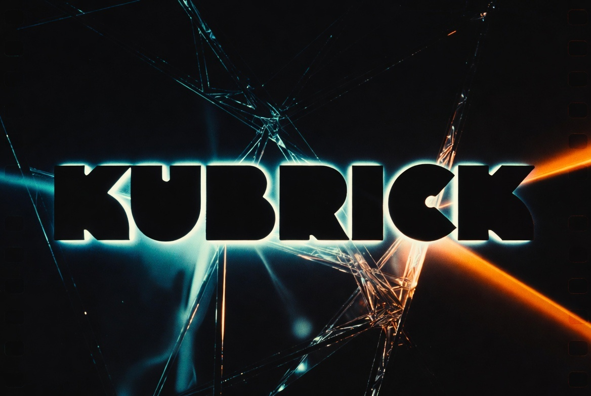

Hermes skill · cinematic narrative
Kubrick
Symbolic cinematic engineering — form first, dramatic function first, continuity that can ship.
Open source v0.27.15 · production surfaces · MIT

What it is
Kubrick helps agents and operators build cinematic narrative systems: story structure, visual continuity, and production-ready packets without collapsing into trivia or generic prose.
Observed form and dramatic pressure first — then frames, motifs, and handoff surfaces that stay consistent across a project.
In short
Use when the job is screenplay, storyboard, or visual continuity — not film trivia or unrelated software work.
Source on GitHubBuilt with
- Hermesmain agent the skill is packaged for
- OpenClawagent with its own Kubrick edition
- Pythonlanguage of the command line and checks
- Keyframeturns shot plans into image and video jobs
- Grok Imagineimage and video generator it writes prompts for
- Flux, Stable Diffusion 3, Midjourneyother image generators with prompt adapters
- DINOv2open vision model comparing faces to references
- Model Context Protocol (MCP)optional way for other tools to call it
Changelog
Milestones in plain English, newest first, to Nov 7, 2026
- Added optional, off-by-default usage feedback that never uploads prompts, scripts or project files.
- Kubrick is now open source under the MIT license, with a plain-English README.
- v0.27.15: new prompt checks catch reserved end-card space, interface text off screen, and handwritten lettering.
- v0.24 to v0.27: storyboards and finished takes are checked against locked references before more video money is spent.
- v0.17.1: updated the skill file to the newer Hermes Agent skill format.
- v0.17.0: added a guided wizard that plans a job before anything runs.
- v0.15 and v0.16: one workflow now covers design documents, scripts, image prompts and video shot plans.
- v0.14: one simple command for every job, plus a safe installer with preview and rollback.
- v0.14: an OpenClaw edition of the skill became available on its own branch.
- v0.13: added prompt adapters for Flux, Stable Diffusion 3 and Midjourney, and an optional tool interface.
- v0.8 to v0.12: first standalone release, then a storyboard compiler that keeps continuity from shot to shot.
Roadmap
What comes next. Plans, not promises, and no dates.
- In progressCollect opt-in usage feedback once a service to receive it is in place.
- PlannedFind heads automatically in wide storyboard frames so identity checks need no hand-drawn box.
- PlannedBuild a second labeled image set so check wording is not tuned on the set that scores it.
- PlannedReuse the storyboard image checks when reviewing finished video takes.